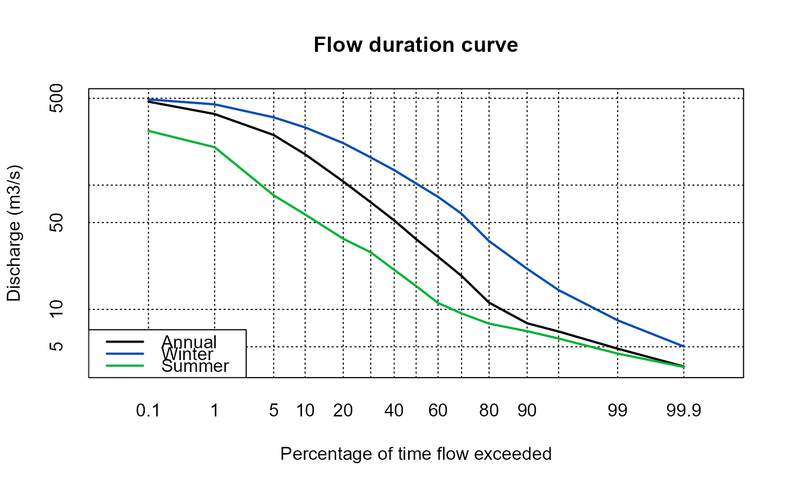
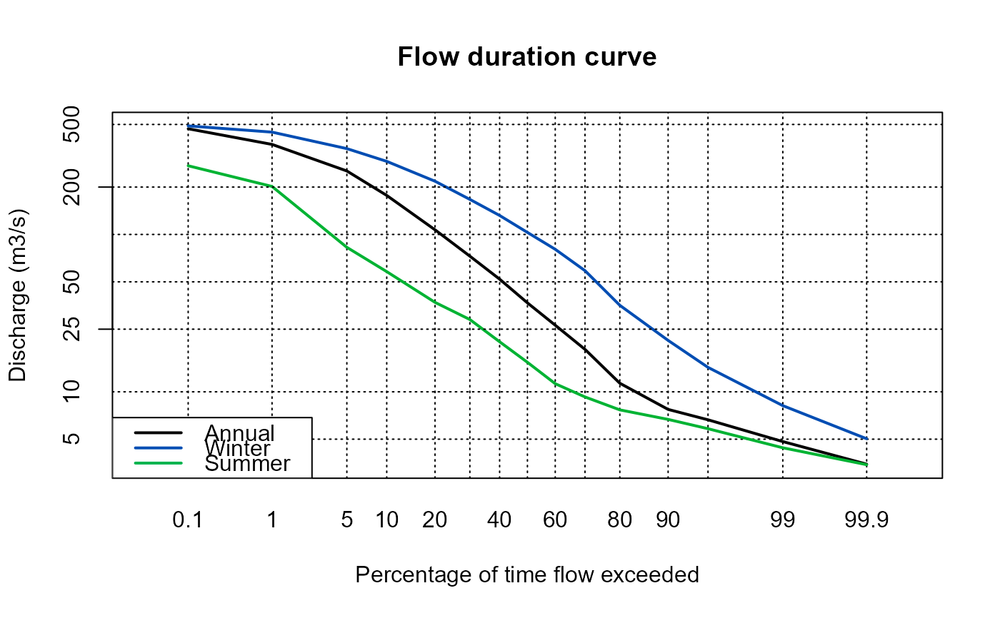
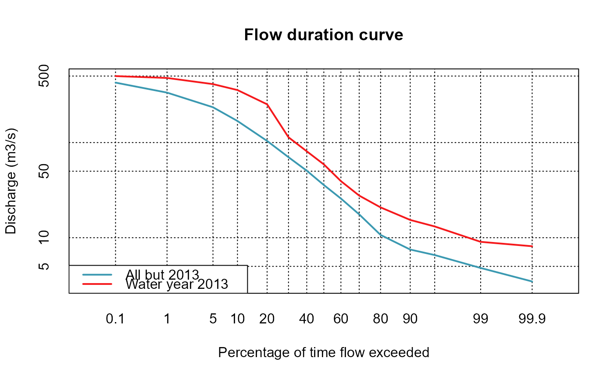

A function to plot flow duration curves for a single flow series or flow duration curves from multiple flow series.
Usage
FlowDurationCurve(
x = NULL,
main = "Flow duration curve",
CompareCurves = NULL,
LegNames = NULL,
Cols = NULL,
AddQs = NULL,
ReturnData = FALSE
)Arguments
- x
a dataframe with date in the first column and numeric (flow) in the second.
- main
A title for the plot. The default is 'Flow duration curve'.
- CompareCurves
A user supplied list where each element is a numeric vector (each a flow series). This is useful for when you want to compare curves from multiple flow series'.
- LegNames
User supplied names for the legend. This only works when the CompareCurves argument is used. The default is Curve1, Curve2...CurveN.
- Cols
User supplied vector of colours. This only works when the CompareCurves argument is used. The default is the Zissou 1 palette.
- AddQs
Adds additional flows and associated horizontal plot lines to the plot. It should be a single numeric value or a vector, for example c(25, 75, 100).
- ReturnData
Logical argument with a default of FALSE. When TRUE, a dataframe is returned with the data from the plot.
Value
If a dataframe of date in the first column and flow in the second is applied with the x argument a plot of the flow duration curves for the winter, summer and annual periods is returned. If a list of flow series is applied with the CompareCurves argument the associated flow duration curves are all plotted together. If ReturnData is TRUE, the plotted data is also returned.
Details
The user can input a dataframe of dates (or POSIXct) and flow to return a plot of the flow duration curve for annual, winter and summer periods. Alternatively a list of flow series' (vectors) can be applied for a plot comparing the individual flow duration curves.
Examples
# Plot a flow duration curve for the Thames at Kingston October 2000 to September 2015
FlowDurationCurve(ThamesPQ[, c(1, 3)])

# Add two additional flow lines for the plot
FlowDurationCurve(ThamesPQ[, c(1, 3)], AddQs = c(25, 200))

# Compare flows from the rather wet 2013 water year (rows 4749 and 5114) with the rest of the flow
FlowDurationCurve(
CompareCurves = list(
ThamesPQ$Q[-seq(4749, 5114)],
ThamesPQ$Q[4749:5114]
),
LegNames = c("All but 2013", "Water year 2013")
)
